The Kangxi emperor (r. 1661–1722) in court dress, anonymous court painter. Palace Museum, Beijing. Public domain, Wikimedia Commons.
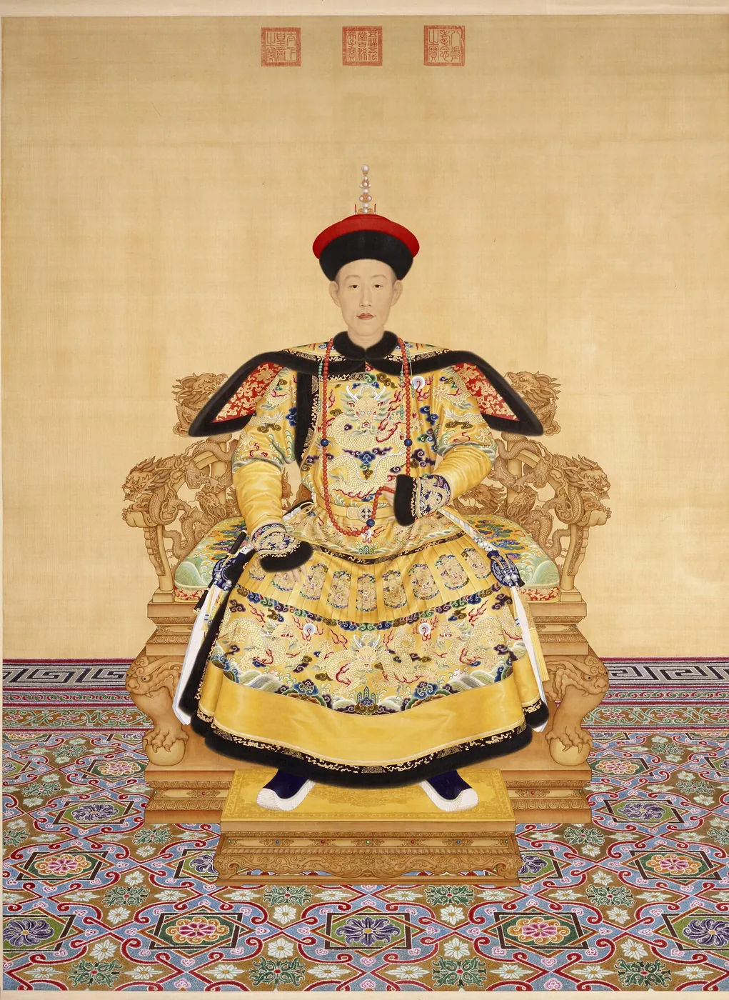
The Qianlong emperor (r. 1736–1795) in court dress, attributed to Giuseppe Castiglione. Palace Museum, Beijing. Public domain, Wikimedia Commons.
Q5 hook · Beijing · 1700s
The Qing Wrote Its Name in Four Languages
The Qing government issued documents in the four main languages of its realm.
On this plaque at a government-sponsored temple in Beijing, the name appears in Manchu, then Chinese, then Tibetan, then Mongolian.
One dynasty addressed many peoples, each in its own script.
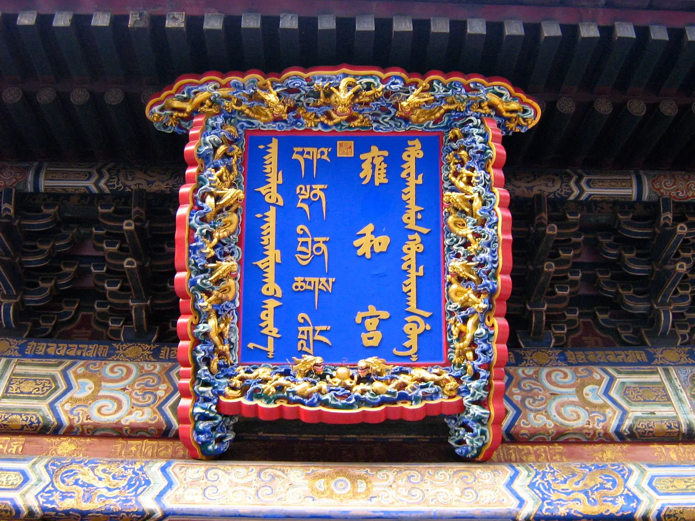
Name plaque of the Yonghe Temple (Yonghegong) in Beijing, reading right to left in Manchu, Chinese, Tibetan, and Mongolian. Photo: Peng Yanan, 2006. CC BY-SA 3.0, Wikimedia Commons.
Sources: Ebrey, Ch. 16, p. 274.
Q3 story · Beijing · 1661
A Boy Who Had Survived Smallpox Became Emperor
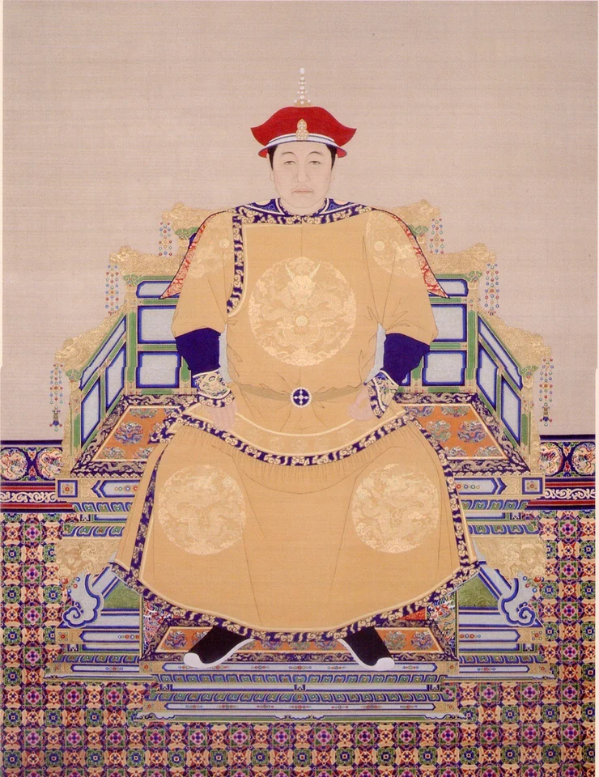
The Shunzhi emperor, Kangxi's father, who died of smallpox; official court portrait. Palace Museum, Beijing. Public domain, Wikimedia Commons.
The Shunzhi emperor died of smallpox, a disease that struck many Manchus after they settled in Beijing.
One of his sons, who had already survived the disease, was chosen to succeed him.
As the Kangxi emperor (r. 1661–1722), he lived to see the Qing Empire firmly established.
He is the boy promised at the end of the conquest story · L1 w · next ↗
Sources: Ebrey, Ch. 16, p. 274.
Q3 and Q5 names · Three emperors, three kinds of name
Names Box: Kangxi, Yongzheng, and Qianlong Are Reign Names
Reign Name · Personal Name · Temple Name
Kangxir. 1661–1722 · personal name Xuanye · temple name Shengzu
Yongzhengr. 1723–1735, Kangxi's son · personal name Yinzhen · temple name Shizong
Qianlongr. 1736–1795, Yongzheng's son and Kangxi's grandson · personal name Hongli · temple name Gaozong
"Kangxi," "Yongzheng," and "Qianlong" are the names of reign periods, not the emperors' own names.
Each of these emperors kept one reign name for his whole reign, so the name came to stand for the man.
Other books may use their personal names, used before they took the throne, or their temple names, given after death.
Sources: Ebrey, Ch. 16, pp. 274, 276.
Q3 story · The palace · 1660s
As a Teenager Kangxi Jailed His Regent and Ruled for Himself
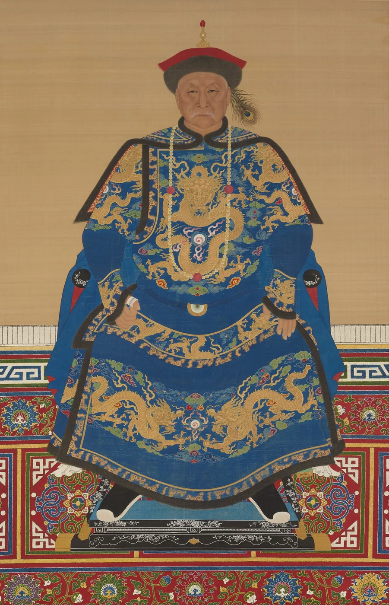
Portrait identified as Oboi, the most powerful of Kangxi's regents. Anonymous Qing painter. Pritzlaff Collection. Public domain, Wikimedia Commons.
Kangxi proved adept at meeting the expectations of both the Manchu and the Chinese elites.
In 1667, at thirteen, he announced that he would rule on his own; in 1669 he had his regent imprisoned.
He could speak, read, and write Chinese.
Sources: Ebrey, Ch. 16, p. 274.
Q3 concept · Legitimacy
Concept: Legitimacy Meant Persuading People a Ruler Had the Right to Rule
Concept
Legitimacy
The belief, shared by the people who are ruled, that a ruler has the right to rule, so that they obey because they accept him and not only because they fear him.
Kangxi appreciated the value of persuading educated Chinese that the Manchus had a legitimate claim to the Mandate of Heaven.
The Mandate of Heaven was the old Zhou idea that Heaven gives the right to rule to a virtuous ruler and takes it from a bad one · Ch. 1 L3 · Mandate of Heaven ↗
A conquest won by force would last only if the conquered came to accept it.
Sources: Ebrey, Ch. 16, p. 274; Ch. 1 L3 for the Mandate of Heaven.
Q3 story · Courting the scholars · 1660s–1700s
Kangxi Kept the Ming Exams and Courted Ming Loyalists
Most Ming political institutions were taken over relatively unchanged, including the examination system · Ch. 14 L3 · exam-video-recap ↗
Kangxi worked to attract Ming loyalists who had been unwilling to serve the Qing · L1 r · concept-loyalism ↗
He held a special examination to select men to compile the official history of the Ming dynasty.
Sources: Ebrey, Ch. 16, p. 274; Ch. 14 L3 for the examinations.
Q3 story · The south · 1680s–1700s
Kangxi Toured the South, Where Resistance Had Been Strongest
Kangxi undertook a series of tours of the south, where resistance to the Qing had been strongest · L1 p · queue-resistance ↗
Court painters recorded the tours on enormous handscrolls.
His grandson Qianlong would copy these tours, at ten times the cost.
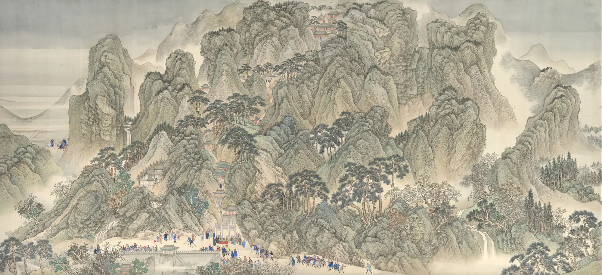
Wang Hui and assistants, The Kangxi Emperor's Southern Inspection Tour, Scroll Three: Jinan to Mount Tai (detail), c. 1691–1698. Metropolitan Museum of Art. CC0, Wikimedia Commons.
Sources: Ebrey, Ch. 16, pp. 274, 276.
Q3 story · The southwest · 1673–1684
In 1673 Wu Sangui, the Man Who Opened the Gate, Rebelled, and Few Followed Him
Wu Sangui and two other Chinese generals had been given vast lands in the south for joining the Qing · L1 l · gate-opens ↗
When the Qing began to curb their power in 1673, Wu declared his own state, and the other two "feudatories" joined him.
A turncoat himself, Wu attracted few followers, and after eight years the Qing armies defeated the revolt.
In 1683 a Qing fleet took Taiwan, the loyalists' last refuge, and in 1684 it became part of Fujian province · L1 q · koxinga ↗
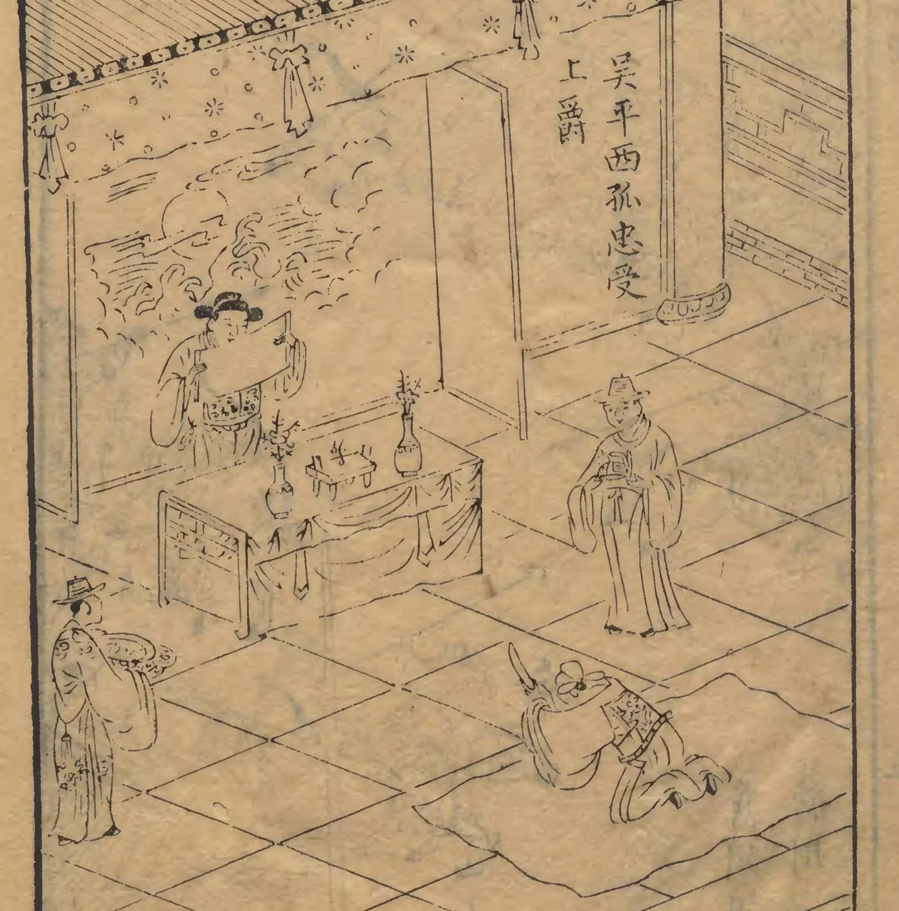
Wu Sangui kneels to receive a noble title, in a novel printed in 1645, when many still hailed him as the loyal general who avenged the Ming. Xinbian jiaochuang tongsu xiaoshuo, National Archives of Japan. Public domain, Wikimedia Commons.
Sources: Ebrey, Ch. 16, p. 274.
Q3 story · Mongolia and the frontiers · 1680s–1720s
Guns, Grain, and Diplomacy Won Kangxi Mongolia
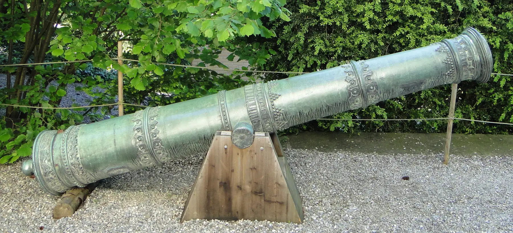
Bronze cannon cast for Kangxi in 1689 to a design by the Jesuit Ferdinand Verbiest; its Chinese and Manchu inscription names him. Bern Historical Museum. Photo: Nikolai Karaneschev. CC BY 3.0, Wikimedia Commons.
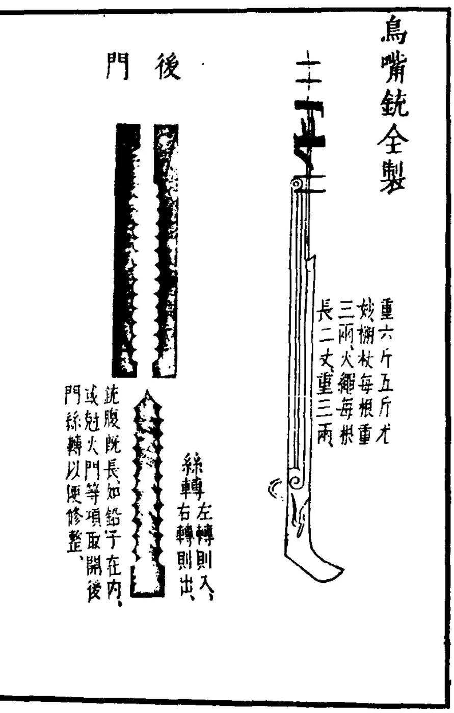
A Ming matchlock musket, from the military encyclopedia Wubei zhi, 1621. Public domain, Wikimedia Commons.
In 1696 Kangxi led eighty thousand men into Mongolia against the Zunghar leader Galdan, and within a few years Manchu supremacy was accepted there.
Qing armies had more and heavier cannon and muskets, and they could feed large armies far out on the steppe.
The guns came by way of the Ming: Chinese defectors brought muskets and Portuguese-style cannon, and the Jesuit Verbiest cast hundreds more · l · jesuits-court ↩
The eastern steppe was secure, though the Zunghars held out in the west until the 1750s · Ch. 14 L2 · great-wall ↗
Sources: Ebrey, Ch. 16, p. 274; Ch. 14 L2 for the Ming Great Wall; Andrade, The Gunpowder Age (2016), for where the guns came from.
Reading Guide · Review Question 3
Reading Guide · Review Question 3
Review Question 3
Kangxi’s Consolidation of the Qing Empire: Evaluate the strategies the Kangxi emperor utilized to solidify Manchu rule over China. How did he neutralize internal rebellions and secure the empire's vast northern and western frontiers?
The Flemish Jesuit Ferdinand Verbiest (1623–1688), Kangxi's court astronomer, in Qing dress with a telescope and armillary sphere; French engraving reproduced in Alfred Hamy, Galerie illustrée de la Compagnie de Jésus (1893). KU Leuven Libraries. Public domain, Wikimedia Commons.
Sources: Ebrey, Ch. 16, p. 276.
Rites preview · Rome and Beijing · early 1700s
When the Pope Forbade Christians to Honor Their Ancestors, Kangxi Turned Against the Missionaries
Dominican and Franciscan missionaries opposed letting Chinese converts keep their ancestral altars.
The pope sided with them in what was called the rites controversy, and Kangxi objected strongly to a pope telling Chinese how to behave.
He let stay only missionaries who accepted the Jesuit view of the rites, later said none should preach, and kept the Jesuit scientists and painters · bb · ps-rites-dispute ↩
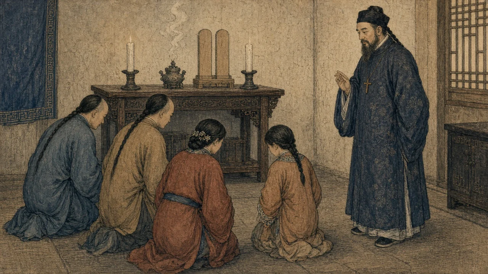
AI-generated illustration in a woodblock-print style, made for this deck: a Chinese Christian family kneels before its ancestral tablets while a Jesuit missionary in the robe and cap of a Qing scholar, wearing a queue and a small cross, looks on, early 1700s. An interpretation, not a historical source.
Sources: Ebrey, Ch. 16, p. 276. Image: AI-generated interpretation.
Q5 story · Central Asia · 1750s
Kangxi's Grandson Qianlong Conquered Xinjiang and Ruled It Lightly
Under Qianlong (r. 1736–1795) the Qing Empire reached its maximum extent with the addition of Chinese Turkestan, modern Xinjiang.
The Qing won the region in the 1750s in campaigns against Uighur and Dzungar Mongol forces.
Like Tibet, it was ruled lightly: its people kept their own religious leaders and did not have to wear the queue · L1 o · queue-order ↗
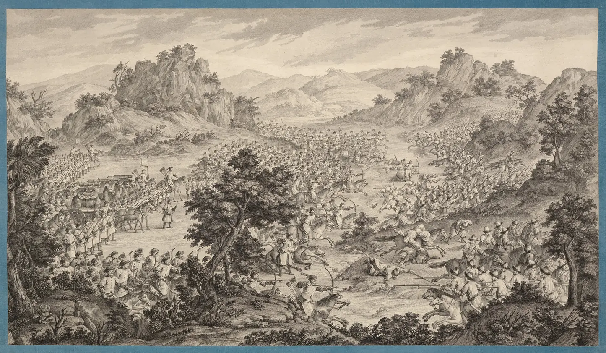
The Battle of Qurman, one of the engravings of the Qianlong emperor's western conquests made in Paris after designs by Giuseppe Castiglione, 1770s. Chester Beatty Library. Public domain, Wikimedia Commons.
Sources: Ebrey, Ch. 16, p. 276.
Q5 story · A many-faced emperor · 1740s–1790s
Qianlong Spoke to Each People in Its Own Language and Faith
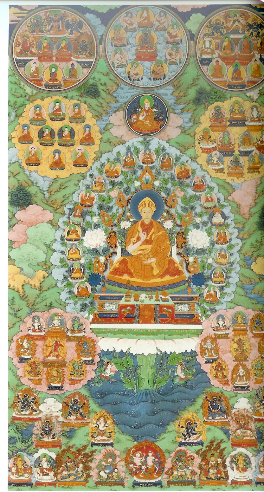
The whole thangka: Qianlong as Manjushri among Buddhist deities, Qing court, mid-1700s.
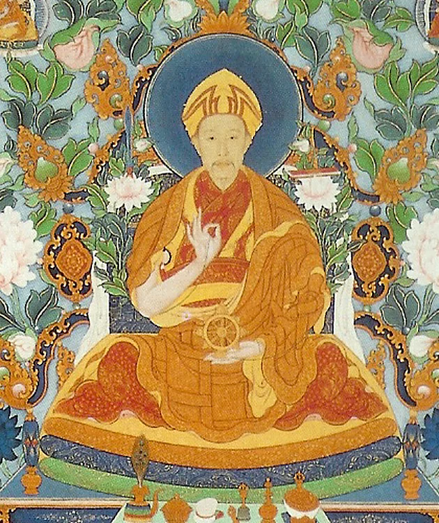
Detail: the emperor's face, attributed to Giuseppe Castiglione, his teaching gesture, and the wheel of the Buddhist law. Public domain, Wikimedia Commons.
Qianlong understood that holding the empire together meant speaking in the political and religious idioms of those he ruled · b · four-scripts ↩
Besides Manchu and Chinese, he learned to converse in Mongolian, Uighur, and Tibetan and addressed envoys in their own languages.
He was as much a patron of Tibetan Buddhism as of Confucianism, and had the Tibetan Buddhist canon translated into Mongolian and Manchu.
Sources: Ebrey, Ch. 16, p. 276.
Q5 concept · Cakravartin
Concept: The Cakravartin Was the Buddhist "Wheel-Turning King"
Concept
Cakravartin
The Buddhist "wheel-turning king": a ruler whose conquests move the world toward the next stage in universal salvation.
Qianlong made much of the Buddhist idea of the cakravartin.
To Buddhist Tibetans and Mongols, his conquests could look like holy work, not mere conquest.
To Chinese scholars he showed a different face, the sage emperor of the next slide.
Sources: Ebrey, Ch. 16, p. 276.
Q5 story · The palace and the south · 1740s–1780s
For Chinese Scholars He Played Poet, Collector, and Devoted Son
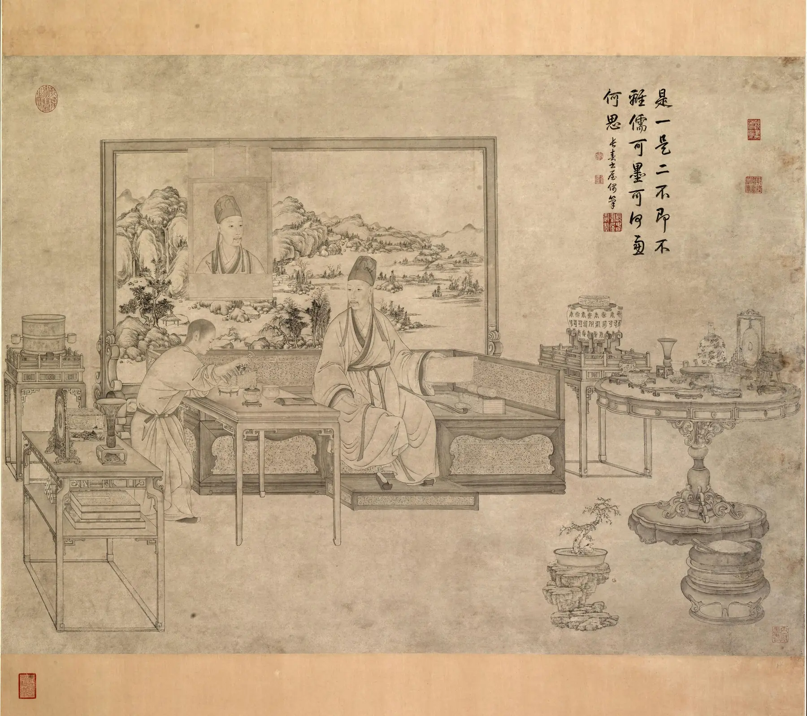
Is It One or Two?: Qianlong dressed as a Chinese scholar among his antiques, with his own portrait on the screen behind him. Qing court painting. Palace Museum, Beijing. Public domain, Wikimedia Commons.
To show the scholar-officials he was a sage emperor, he worked on state affairs until early afternoon, then turned to reading, painting, and calligraphy.
He took credit for more than forty-two thousand poems and inscribed his own verses on hundreds of masterpieces in the palace collections.
He was ostentatiously devoted to his mother, visiting her daily, and toured the south partly to entertain her.
When Rumors Said Sorcerers Were Clipping Queues, He Hunted a Plot That Did Not Exist
For all his displays of Chinese virtue, Qianlong was not fully confident that the Chinese supported his rule.
After more than thirty years on the throne, he heard rumors that sorcerers were "stealing souls" by clipping the ends of men's queues.
Suspecting a seditious plot, he had officials interrogate men under torture until they found more and more evidence of a plot that did not exist · L1 o · queue-order ↗
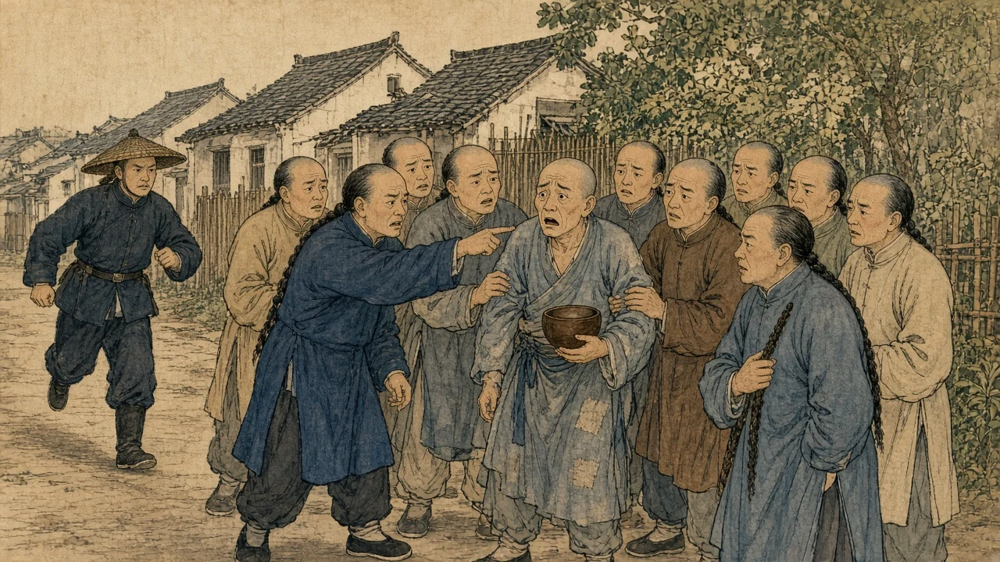
AI-generated illustration in a woodblock-print style, made for this deck: villagers in the Yangzi delta seize a frightened wandering monk accused of clipping men's queues to steal their souls, while a constable hurries toward them, 1768. An interpretation, not a historical source.
Sources: Ebrey, Ch. 16, p. 276. Image: AI-generated interpretation.
Q5 concept · Literary inquisition
Concept: A Literary Inquisition Hunted Disloyal Words
Concept
Literary inquisition
A government campaign that searches writings for disloyal words and punishes the people who wrote them, or destroys the books.
Qianlong was quick to act on any suspicion of anti-Manchu thoughts or actions.
In a literary inquisition, words themselves were treated as evidence of disloyalty.
The danger was older than Qianlong: under Kangxi, the scholar Fang Bao spent two years in prison for writing a preface to a condemned book.
Sources: Ebrey, Ch. 16, pp. 276, 278.
Q5 story · The imperial library · 1770s
While Collecting Every Book in China, He Destroyed More Than Two Thousand
Qianlong sponsored the Complete Books of the Four Treasuries, an effort to catalogue nearly all books in China.
Suspecting governors of holding back seditious books, he ordered full searches for slurs on the Manchus or earlier alien conquerors.
Passages were cut or rewritten, and books judged wholly offensive were destroyed.
No copies survive of more than two thousand titles.
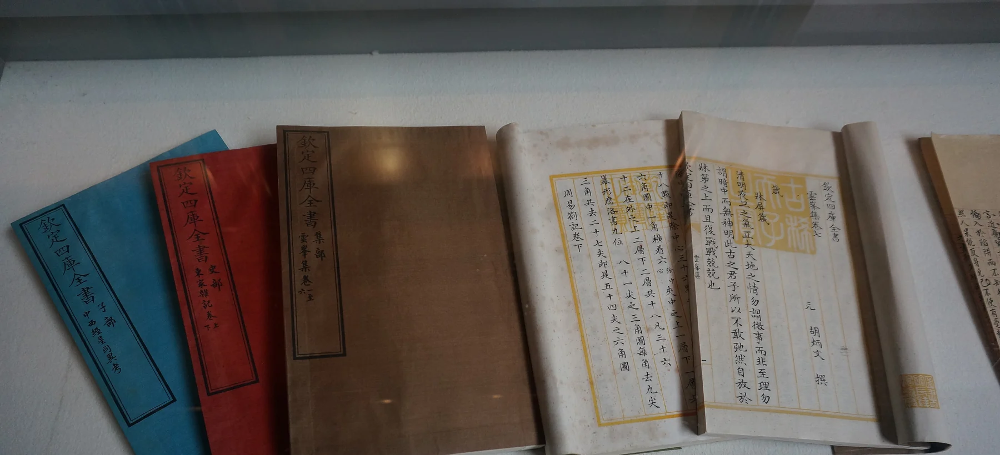
Replica volumes of the Four Treasuries set once kept in the Wenlan Pavilion, Hangzhou, West Lake Museum. Photo: 猫猫的日记本, 2015. CC BY-SA 4.0, Wikimedia Commons.
Sources: Ebrey, Ch. 16, p. 276.
Reading Guide · Review Question 5
Reading Guide · Review Question 5
Review Question 5
The Dual Rulership and Cultural Control of Qianlong: Analyze the Qianlong emperor's approach to ruling a massive, multiethnic empire. How did he balance his patronage of diverse cultural traditions with his strict suppression of anti-Manchu sentiment?
The Conquerors' Grandsons Lived Behind Garrison Walls on State Stipends
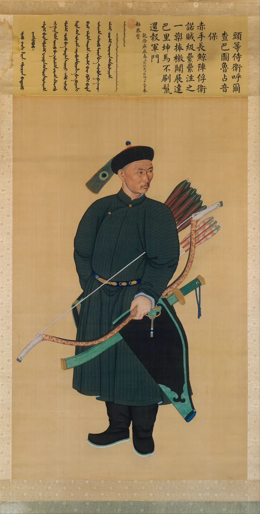
Portrait of the Imperial Bodyguard Zhanyinbao, anonymous Qing court artist, 1760, in the European-influenced style Qianlong favored. Metropolitan Museum of Art, 1986.206. CC0, Wikimedia Commons.
All three emperors used the banners to keep military control; bannermen lived in more than ninety walled garrisons · L1 y · ps-garrisons ↗
They were a hereditary caste, kept apart from Chinese and supported on stipends from cradle to grave · L1 bb ↗L1 dd ↗
Zhanyinbao, painted in 1760, shows the martial ideal the court wanted · L1 ll · ps-loyal ↗
Sources: Ebrey, Ch. 16, p. 277; Lecture 1 independent study for the full story.
Banners recap · Garrison cities · 1700s
Forbidden Other Work, Many Bannermen Fell Idle and into Debt
The banner population grew faster than the need for soldiers, but bannermen could not take other jobs · L1 ee · ps-too-many ↗
Many lived in forced idleness on relatives' stipends; debts mounted and banner land was sold · L1 ff · ps-debt ↗
Qianlong removed many Chinese bannermen from the banners and tried sending Manchus back to Manchuria · L1 jj · ps-manchuria ↗
The full story, and Review Question 4, are in Lecture 1's independent study · L1 mm · ps-rg-q4 ↗
Sources: Ebrey, Ch. 16, pp. 277–278.
Closing · The court · 1770s–1799
In Old Age Qianlong Trusted a Corrupt Favorite, Then Gave Up the Throne
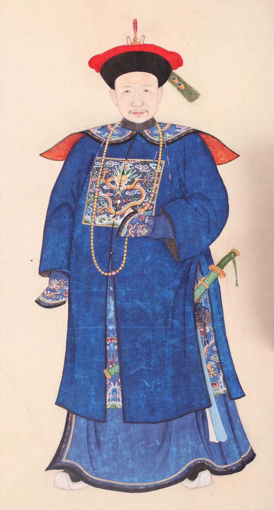
Heshen, from the set of portraits of officials honored for the Taiwan campaign, about 1788, with an inscription by Qianlong. Public domain, Wikimedia Commons.
In his sixties Qianlong began to favor Heshen, a handsome and intelligent young imperial bodyguard.
Heshen was rapidly promoted to posts over revenue and appointments, and the emperor did nothing to stop his blatant corruption.
As uprisings spread, Heshen sent rosy reports while pocketing military funds.
In 1795 he announced he would step down rather than reign longer than his grandfather; he handed over in 1796 but ran the court until he died in 1799.
Sources: Ebrey, Ch. 16, p. 277.
Looking ahead · Rehe · 1793
In 1793 a British Ship Arrived with Six Hundred Cases of Gifts
In 1793, near the end of Qianlong's reign, Lord Macartney arrived from Britain with an entourage of eighty-four and six hundred cases of gifts.
Britain wanted something from the empire Kangxi and Qianlong had built.
AI-enhanced redraw of William Alexander's picture of Lord Macartney's audience with the Qianlong emperor at Rehe, which Alexander, who did not attend, drew from others' sketches; made for this deck to make the scene clearer: the emperor on his throne, Macartney kneeling with the king's letter, the British party at right. An interpretation, not a historical source; the original drawing is in the British Library (Wikimedia Commons).
Sources: Ebrey, Ch. 16, p. 280. Image: AI-enhanced redraw of William Alexander's drawing.
Pierian Spring · Independent Study
Today's lecture ends here. Continue on your own: the stories below finish this chapter's history, and two of them end with a review question to answer.
"A little learning is a dang'rous thing; Drink deep, or taste not the Pierian spring."Alexander Pope, An Essay on Criticism, 1711
Pierian Spring · Q13 story · The court and the provinces · 1680s–1720s
Jesuits Mapped the Empire and Watched the Skies for the Emperor
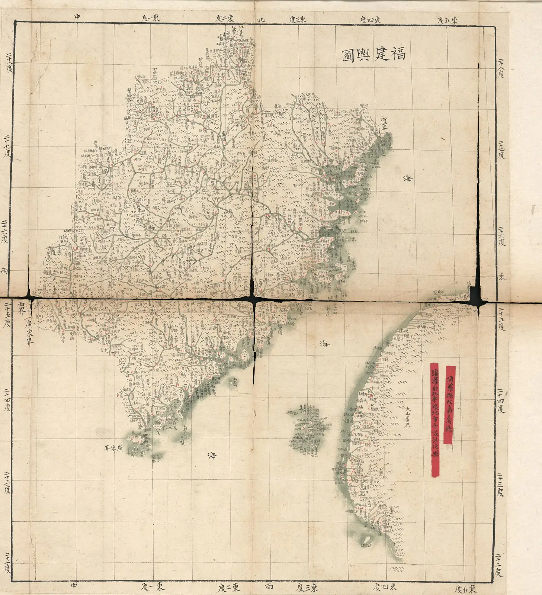
Fujian and Taiwan, a sheet of the Huangyu quanlan tu, the atlas of the empire made for Kangxi from surveys of 1708–1717 led by Jesuits, 1721. Library of Congress. Public domain, Wikimedia Commons.
They served Kangxi as astronomers and cartographers and translated many European works into Chinese.
From 1708 to 1717 Jesuit and Chinese surveyors mapped the empire for a great atlas, finished in 1721.
Sources: Ebrey, Ch. 16, p. 276.
Pierian Spring · Q13 story · Missionaries in China · 1600s–1700s
Dominicans and Franciscans Accused the Jesuits of Allowing Ancestor Worship
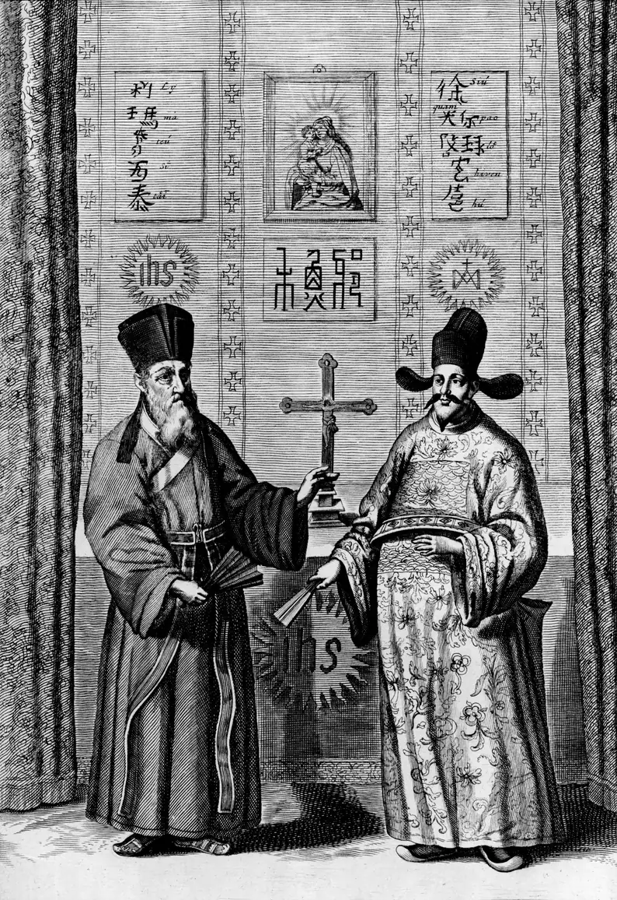
The Jesuit Matteo Ricci (left) and his convert, the official Xu Guangqi, engraving from Athanasius Kircher, China Illustrata, 1667. National Library of Poland. Public domain, Wikimedia Commons.
From Matteo Ricci on, Jesuits dressed and studied like Chinese scholars and let converts keep honoring their ancestors.
The Dominican and Franciscan orders in China opposed allowing converts to maintain ancestral altars.
At stake was whether honoring ancestors was a family custom Christians could keep or a worship they must give up.
Sources: Ebrey, Ch. 16, p. 276.
Pierian Spring · Q13 concept · The rites controversy
Concept: The Pope Ruled That Chinese Christians Could Not Keep the Rites
Concept
The rites controversy
The dispute among Catholic missionaries over whether Chinese converts could keep their ancestral altars. The pope sided with the opponents of the Jesuits, and Kangxi objected to his directives.
The pope sided with the Dominicans and Franciscans against the Jesuits.
Earlier, in 1692, Kangxi had issued an edict tolerating Christianity.
In 1715 a papal bull, a formal decree, forbade Chinese Christians to take part in the rites.
Sources: Ebrey, Ch. 16, p. 276.
Pierian Spring · Q13 story · Beijing · 1715–1724
Kangxi Would Not Let a Foreign Priest Tell Chinese How to Behave
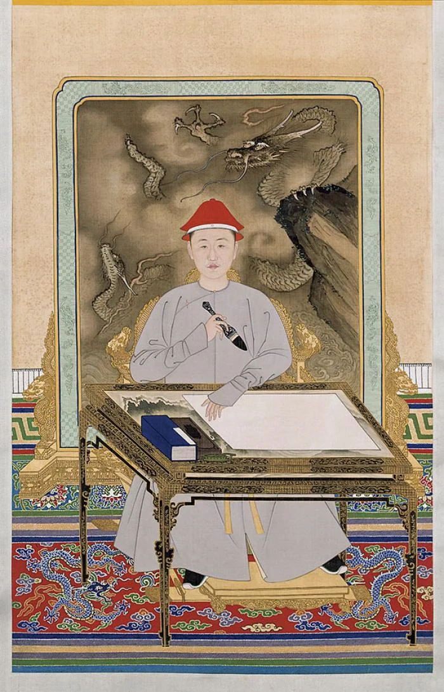
The Kangxi emperor in informal dress, holding a brush, anonymous court painter. Palace Museum, Beijing. Public domain, Wikimedia Commons.
Kangxi objected strongly to the pope's issuing directives about how Chinese should behave.
He ruled that Europeans should no longer preach in China; his son made the ban formal in 1724.
He still allowed Jesuit scientists and painters to remain in Beijing · m · rites-ban ↩
The quarrel was about authority: who ruled the conduct of the emperor's subjects?
Sources: Ebrey, Ch. 16, p. 276.
Reading Guide · Review Only Question 13
Reading Guide · Review Only Question 13
Review Only Question 13
The Jesuit Rites Controversy (Review Only): Explain the nature of the rites controversy during the Kangxi reign and analyze why the Kangxi emperor ultimately outlawed Christian missionaries.
Pierian Spring · Q12 story · The palace · 1723–1735
A Forty-Four-Year-Old Prince Took the Throne and Worked Late into the Night
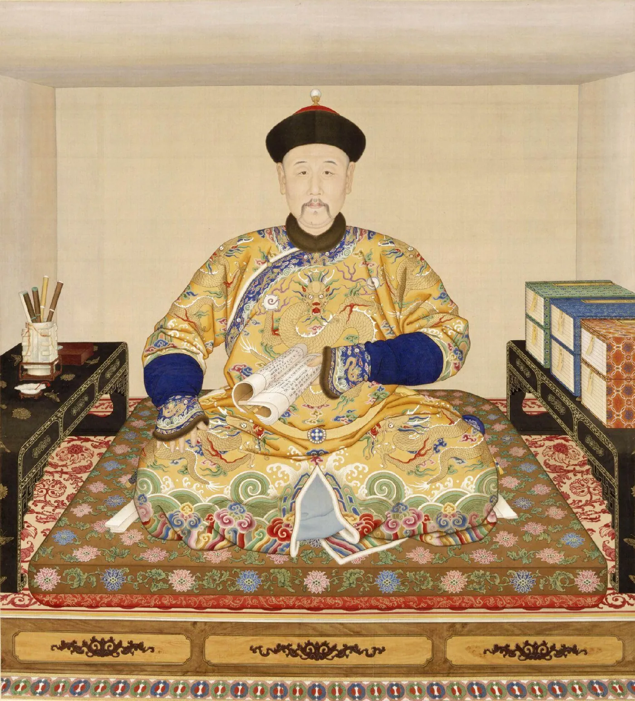
The Yongzheng emperor reading, anonymous court painter, 1720s–1730s. Palace Museum, Beijing. Public domain, Wikimedia Commons.
Kangxi's heir ruled for twelve years as the Yongzheng emperor (r. 1723–1735), taking the throne at forty-four.
He was a hard-working ruler who tightened central control over the government.
He read and answered officials' reports himself, by his own account often until late at night.
Sources: Ebrey, Ch. 16, p. 276; his working habits (his own 1732 preface to his collected rescripts).
Pierian Spring · Q12 story · The Forbidden City · 1720s–1730s
Yongzheng Created a Small Council to Run Affairs from the Palace
Yongzheng tightened central control over the government.
In 1729, for a war against the Zunghar Mongols, he set up a small office of trusted ministers inside the palace; under his son it grew into the Grand Council.
He widened a system begun by Kangxi of secret reports sent straight to the emperor, to check on officials without going through the regular bureaucracy.
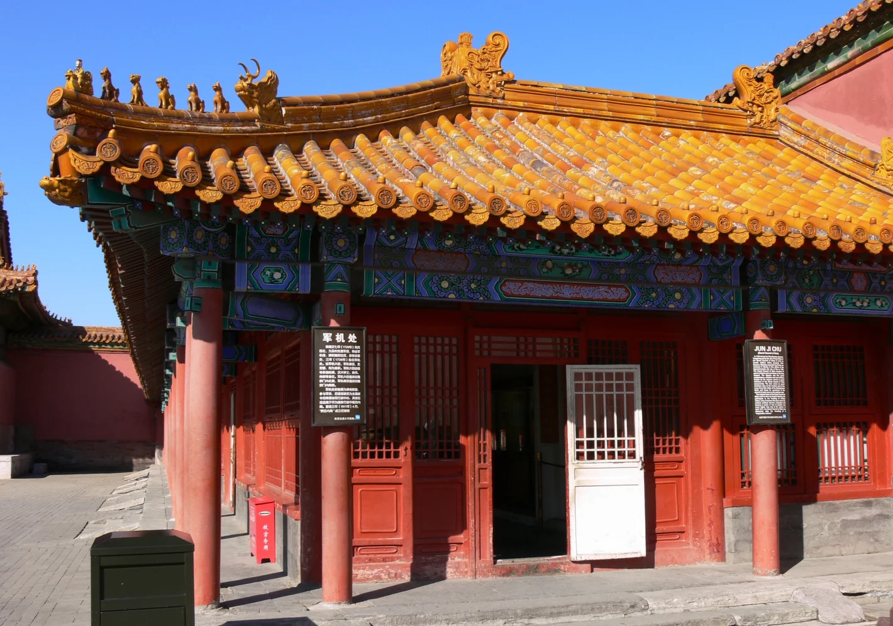
The modest building of the Grand Council (Junjichu) inside the Forbidden City, near the emperor's quarters. Photo: Gisling, 2007. CC BY 3.0, Wikimedia Commons.
Sources: Ebrey, Ch. 16, p. 276; the council and secret reports (Bartlett; Academia Sinica).
Pierian Spring · Q12 story · County offices · 1720s
He Replaced a Patchwork of Fees with Regular Taxes
Yongzheng oversaw a rationalization of the tax structure, substituting new levies for a patchwork of taxes and fees.
Local officials had long added irregular surcharges, such as a "meltdown fee" for melting tax silver into ingots.
From 1724 he made the surcharge a fixed, official levy that paid officials allowances meant to keep them honest and covered local expenses.
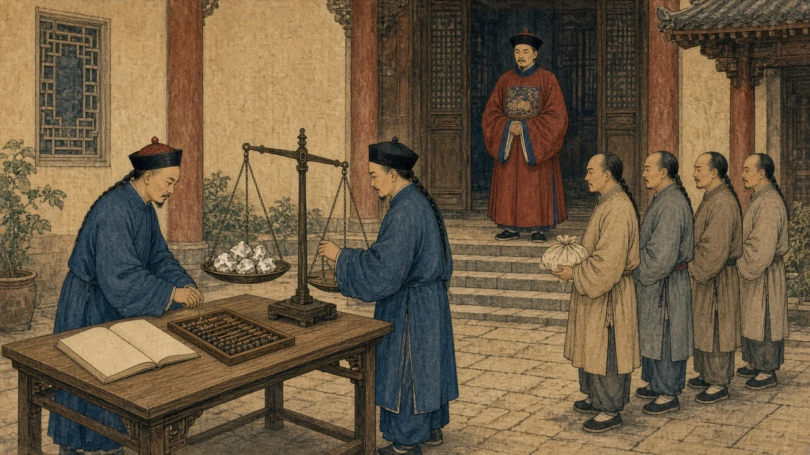
AI-generated illustration in a woodblock-print style, made for this deck: clerks weigh tax silver on a balance in a county yamen courtyard as farmers wait in line and the magistrate looks on, 1720s. An interpretation, not a historical source.
Sources: Ebrey, Ch. 16, p. 276. Image: AI-generated interpretation.
Pierian Spring · Q12 story · The treasury · 1736 onward
His Son Inherited a Full Treasury
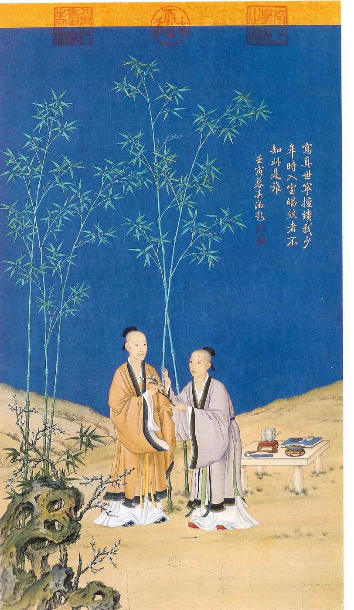
Giuseppe Castiglione, Spring's Peaceful Message, date debated. Qianlong's 1782 inscription makes the younger man the emperor in youth; the older is often read as Yongzheng. Palace Museum, Beijing. Public domain, Wikimedia Commons.
Qianlong benefited from his father's fiscal reforms.
During his reign the Qing government regularly ran surpluses.
That money helped pay for the conquests, tours, and projects of slides n–t · n · xinjiang ↩
Sources: Ebrey, Ch. 16, p. 276.
Reading Guide · Review Only Question 12
Reading Guide · Review Only Question 12
Review Only Question 12
The Role of the Yongzheng Emperor (Review Only): Evaluate the Yongzheng emperor’s contributions to Qing governance. How did his policies strengthen central control and fiscal administration?
Pierian Spring · More to explore · Yangzhou · 1751–1784
A Salt Merchant Hosted the Emperor in His Garden
Jiang Chun (1725–1793) was one of the head salt merchants of Yangzhou, licensed to sell the government's monopoly salt.
Qianlong visited Yangzhou six times on his southern tours; Jiang met him every time and hosted him in his gardens four times.
Qianlong named Jiang's Garden of Pure Fragrance and once lent him 500,000 taels when he ran out of money.
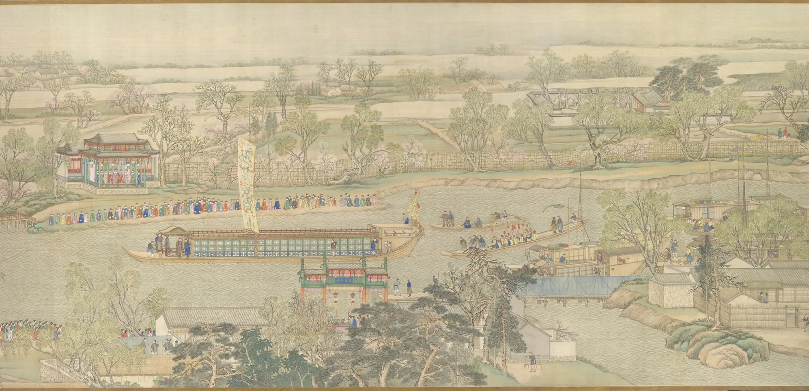
Xu Yang, The Qianlong Emperor's Southern Inspection Tour, Scroll Six: Entering Suzhou along the Grand Canal (detail), 1770. Metropolitan Museum of Art. Public domain, Wikimedia Commons.
Sources: Ebrey, Ch. 16, p. 275.
Sources and image credits
The Stories in This Deck Rest on These Sources
Main source
Patricia Buckley Ebrey, A History of China, Chapter 16, "The Creation of the Manchu Empire (1600–1800)," pp. 274–280. All page references in this deck are to these pages.
Further reading beyond Ebrey
Frederic Wakeman Jr., The Great Enterprise (1985) (slides i, j).
Tonio Andrade, The Gunpowder Age (2016) (slide j).
Maria Khayutina, "Eine chinesische Kanone aus der Ära des Kangxi-Kaisers," Berner Zeitschrift für Geschichte 77, no. 2 (2015) (slide j).
Philip A. Kuhn, Soulstealers: The Chinese Sorcery Scare of 1768 (1990) (slide r).
Madeleine Zelin, The Magistrate's Tael (1984) (slide hh).
Beatrice S. Bartlett, Monarchs and Ministers (1991) (slides ff, gg).
Yongzheng emperor, preface to his collected vermilion rescripts (Yongzheng zhupi yuzhi), 1732 (slide ff).
Academia Sinica, Grand Secretariat Archives, "Palace Memorial" guide (slide gg).
Palace Museum, Beijing, entry for Spring's Peaceful Message (故00005361); Wu Hung in The Paper (slide ii).
D. E. Mungello, The Great Encounter of China and the West (2013) (slides m, aa–dd).
R. B. Oxnam, Ruling from Horseback (1975) (e); J. R. Shepherd, Statecraft and Political Economy on the Taiwan Frontier (1993) (i); P. C. Perdue, China Marches West (2005), and L. Petech, China and Tibet in the Early 18th Century (1972) (j); P. Berger, Empire of Emptiness (2003) (o); M. C. Elliott, The Manchu Way (2001) (w).
Images (real; all via Wikimedia Commons)
a: Court portraits of Kangxi and Qianlong (the latter attributed to Castiglione), Palace Museum, Beijing. Public domain.
b: Yonghe Temple name plaque. Photo: Peng Yanan, 2006. CC BY-SA 3.0.
c: Court portrait of the Shunzhi emperor, Palace Museum, Beijing. Public domain.
e: Portrait identified as Oboi, Pritzlaff Collection. Public domain.
h: Wang Hui and assistants, Kangxi Emperor's Southern Inspection Tour, Scroll Three, c. 1691–1698, Metropolitan Museum of Art. CC0.
i: Wu Sangui receives a title, woodblock illustration in Xinbian jiaochuang tongsu xiaoshuo, 1645, National Archives of Japan (Naikaku Bunko). Public domain.
j: Bronze cannon of 1689 designed by Ferdinand Verbiest, Bern Historical Museum. Photo: Nikolai Karaneschev, 2012. CC BY 3.0. Matchlock musket from Mao Yuanyi, Wubei zhi, 1621, Internet Archive scan. Public domain.
l: Ferdinand Verbiest in Qing dress, French engraving reproduced in Hamy, Galerie illustrée de la Compagnie de Jésus, 1893, KU Leuven Libraries. Public domain.
n: The Battle of Qurman, engraving after Castiglione, 1770s, Chester Beatty Library. Public domain.
o: Qianlong as Manjushri, Qing court thangka, mid-1700s, full view and detail of the center (detail cropped for this deck from the same scan). Public domain.
q: Is It One or Two?, Qing court painting, Palace Museum, Beijing. Public domain.
t: Replica Four Treasuries volumes, West Lake Museum. Photo: 猫猫的日记本, 2015. CC BY-SA 4.0.
v: Portrait of the Imperial Bodyguard Zhanyinbao, 1760, Metropolitan Museum of Art. CC0.
x: Heshen, from the portraits of officials honored for the Taiwan campaign, c. 1788. Public domain.
aa: Huangyu quanlan tu, Fujian sheet, 1721, Library of Congress. Public domain.
bb: Matteo Ricci and Xu Guangqi, from Kircher, China Illustrata, 1667, National Library of Poland. Public domain.
dd: Kangxi in informal dress holding a brush, Palace Museum, Beijing. Public domain.
ff: The Yongzheng emperor reading, Palace Museum, Beijing. Public domain.
gg: Grand Council building, Forbidden City. Photo: Gisling, 2007. CC BY 3.0.
ii: Giuseppe Castiglione, Spring's Peaceful Message, Palace Museum, Beijing. Public domain.
m, r, y, hh: AI-generated illustrations made for this deck: m, r, and hh in a woodblock-print style; y an AI-enhanced redraw of William Alexander's 1793 sketch of Macartney's audience (original: British Library, public domain). Interpretations, not historical sources.
kk: Xu Yang, Qianlong Emperor's Southern Inspection Tour, Scroll Six, 1770, Metropolitan Museum of Art. Public domain.
The rites controversy was a dispute among Catholic missionaries in China over whether Chinese converts could keep their ancestral altars. The pope sided with the Dominicans and Franciscans, who said they could not, and Kangxi objected to the pope's directives (Ebrey, p. 276).
×
Four Treasuries
The Complete Books of the Four Treasuries was Qianlong's project to catalogue nearly all books in China. During it, he ordered searches for books that disparaged the Manchus or earlier alien conquerors (Ebrey, p. 276).
The "four treasuries" are the four traditional divisions of Chinese books.